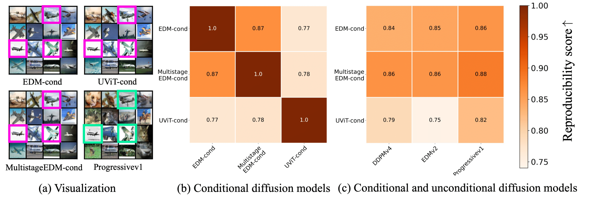
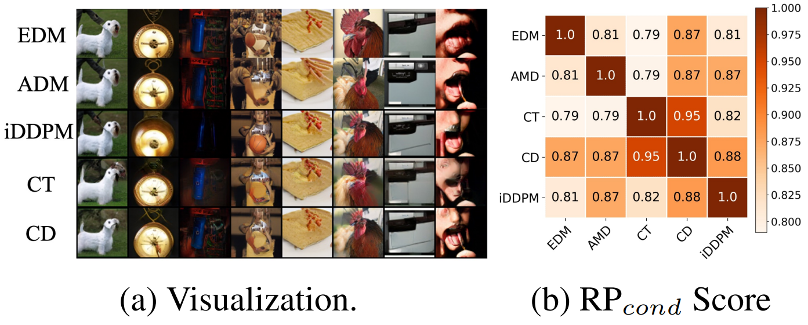

Conditional Diffusion Model

Reproducibility for conditional diffusion model in the generalization regime.
Reproducibility on ImageNet.

In this work, we investigate an intriguing and prevalent phenomenon of diffusion models which we term as "consistent model reproducibility": given the same starting noise input and a deterministic sampler, different diffusion models often yield remarkably similar outputs. We confirm this phenomenon through comprehensive experiments, implying that different diffusion models consistently reach the same data distribution and score function regardless of diffusion model frameworks, model architectures, or training procedures. More strikingly, our further investigation implies that diffusion models are learning distinct distributions influenced by the training data size. This is evident in two distinct training regimes: (i) "memorization regime", where the diffusion model overfits to the training data distribution, and (ii) "generalization regime", where the model learns the underlying data distribution. Our study also finds that this valuable property generalizes to many variants of diffusion models, including those for conditional generation and solving inverse problems. Lastly, we discuss how our findings connect to existing research and highlight the practical implications of our discoveries.
@inproceedings{
zhang2024the,
title={The Emergence of Reproducibility and Consistency in Diffusion Models},
author={Huijie Zhang and Jinfan Zhou and Yifu Lu and Minzhe Guo and Peng Wang and Liyue Shen and Qing Qu},
booktitle={Forty-first International Conference on Machine Learning},
year={2024},
url={https://openreview.net/forum?id=HsliOqZkc0}
}